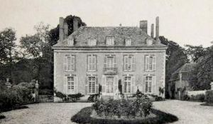
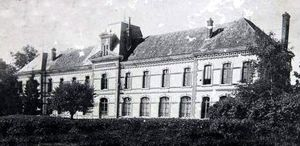
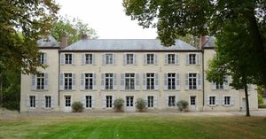
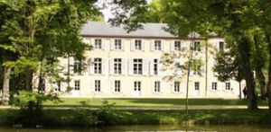

Recensement Jean-Claude Truffet
| Département | 45 — Loiret |
| Canton | Amilly |
| Commune | Amilly |
| Type d'édifice | Château |
| Période d'origine | XVII-XIX |




Trois châteaux dans cet article; Bourgoins, Chesnoy, et Pailleterie. Varennes voir article. BOURGOINS, du couvent des Dominicaines de Montargis tout proche, fondé par Amicie, fille de Simon de Montfort et épouse de Gauthier II de Courtenay. Sur les ruines du manoir de la seigneurie des Bourgoins s'éleva par la suite un bâtiment d'époque Louis XIV que vendirent les religieuses. C'est le docteur Trioson, médecin des armées du roi, qui acquit le domaine, fit raser la maison et fit bâtir en 1775 l'élégant château de style Louis XVI qui existe encore aujourd'hui. Le docteur Trioson légua ce château à son fils adoptif, le peintre Girodet-Trioson, dont les initiales G.T. se retrouvent sur la grille et les balcons. Au fronton de cette grille, on trouve la devise "Libertatis exoneratae recessus", et au-dessus des entrées du château, on lit côté nord, Nec plus nec minus, et côté sud : Paix et Peu. Girodet-Trioson résida souvent aux Bourgoins et y recevait. N'ayant pas d'enfant, il légua son domaine à sa nièce, Rosine Becquerel Despreaux, qui le transmit à ses descendants. Ceux-ci le vendirent en 1900, en emmenant à Chenevières les meubles et les collections. CHESNOY, du début du XIXe siècle, Le Chesnoy est un ensemble composé de trois fermes à la lisière de la forêt. L'une d'elle devient la propriété de la ville de Montargis, qui, grâce au legs des époux Roux Fédry, y crée, au nom de l'État, le 17 novembre 1886, une école pratique d'agriculture.
CHESNOY, l'imposant bâtiment aux ouvertures ourlées de brique date de cette époque. Aujourd'hui, le lycée Le Chesnoy les Barres est l'un des fleurons de l'enseignement agricole et l'un des plus grands établissements de ce type en France. PAILLETERIE, au XVIIe siècle, le château s'appelle Le Chesnoy et appartient à un personnage important et fortuné, Jacques Guyon, seigneur de la Rivière et du Chesnoy, receveur des Aides et Tailles de Montargis. C'est à lui et à Guillaume Boutheroüe, que Louis XIII accorde en 1638, l'autorisation de terminer à leurs frais la construction du canal de Briare, en devenant propriétaires et en l'exploitant. Le canal est ouvert à la navigation en 1642. Pour le remercier, le roi anoblit le commanditaire du canal, qui prend désormais le nom de Guyon du Chesnoy. Le fils de ce dernier épouse en 1664 Jeanne Marie Bouvier de La Mothe. L'une des filles du couple, Jeanne-Marie Guyon du Chesnoy épouse le fils de Nicolas Fouquet. En 1754, un gentilhomme du Pays de Caux Davy de La Pailleterie, achète le domaine qu'il agrandit et rebaptise La Pailleterie. En 1769, il le vend à Nicolas Croquet de Béligny. Le château que nous pouvons admirer aujourd'hui, très équilibré avec son fronton et sa longue façade rythmée de neuf ouvertures sur chacun des deux étages, a été construit au XVIIIe siècle. Ces bâtiments du XVIIe siècle abritent le musée des Arts et Traditions du Gâtinais.
Bourgoins; famille Becquerel Despreaux
"
Trois châteaux à Amilly; Bourgoins grav-1, Chesnoy grav-2, Pailleterie grav 3-4